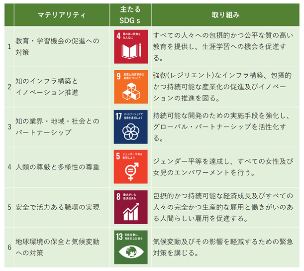

当社グループの経営方針、経営環境及び対処すべき課題等は、以下のとおりであります。
なお、文中の将来に関する事項は、当連結会計年度末現在において当社グループが判断したものであります。
(1)会社の経営の基本方針
当社グループは2010年２月１日にＣＨＩグループ株式会社として、これからの日本の礎となる知の生成と流通に貢献することを共通の使命と考える丸善株式会社と株式会社図書館流通センターが、共同株式移転により経営統合し設立いたしました。その後、以下に掲げる価値観を共有する、株式会社ジュンク堂書店、株式会社雄松堂書店との株式交換による経営統合、各事業領域における体質強化を図るための分社化、さらには電子書籍事業へ対応するための新会社設立などを経て、2011年５月１日には、主要市場である出版流通市場における一層のブランド浸透のため、丸善ＣＨＩホールディングス株式会社に商号変更を行いました。
さらに、より効率的な運営とブランド力の発揮による成長と収益拡大を図るため、書店事業において、2015年２月１日付で丸善書店株式会社と株式会社ジュンク堂書店を合併（株式会社丸善ジュンク堂書店に商号変更）、大学等教育・研究機関および研究者向け事業において、2016年２月１日付で丸善株式会社と株式会社雄松堂書店を合併（丸善雄松堂株式会社に商号変更）しております。
これらの体制のもと、当社グループでは、次のような経営理念を各事業会社が共有し、知を求めるすべての人々と、知を提供する出版流通の接点の拡大をめざします。
①価値観：知は社会の礎である
私たちは、知が人に与える力を信じます。そして時代に即した最良の知のグローバルな循環が21世紀の創発的な日本の社会の礎であると考えます。
②グループビジョン：知の生成と流通に革新をもたらす企業集団となる
私たちは、「知は社会の礎である」という価値観を共有し、教育・学術機関、図書館、出版業界等と連携し、最良な知の生成・流通と知的な環境づくりにおいて、革新的な仕組みを創出、提供することにより、業界の活性化をリードし、日本の社会に貢献する企業集団となることを目指します。
(2)中長期的な会社の経営戦略
「中期経営計画」では目標とする経営指標達成のために、グループ資産の活用促進、成長領域の創出、収益構造の転換の３点を基本方針とし、これらの取り組みを通じ、変化と多様性の時代においても持続的成長を可能とする経営基盤の構築を行ってまいります。戦略および計画の詳細については、「（4）経営環境及び優先的に対処すべき課題」、および2024年３月14日公表の「中期経営計画」をご参照ください。
(3)目標とする経営指標
当社グループは2024年３月14日付で「中期経営計画」を公表いたしました。この中で当社は、経営理念である価値観およびグループビジョンのもと、「知の生成と流通に持続的に貢献するための成長力と資本効率の向上」を目指し事業変革に取り組むことで、2029年１月期には、売上高2,000億円、営業利益85億円、親会社株主に帰属する当期純利益50億円、を目標としております。また、資本コストと株価についても、具体的な経営指標としてＲＯＥ（自己資本利益率）は2029年１月期に7.5％以上を目標とし、ＰＢＲ（株価純資産倍率）については早期に１倍以上を目指す計画としております。
(4)経営環境及び優先的に対処すべき課題
当社グループを取り巻く市場環境は、主要市場である出版物販売市場の売上額が15年でほぼ半減するなど厳しい環境下にあります。また、少子高齢化と人口減少が進む我が国の経済状況は、株価は過去最高値を更新する一方、物価高が先行し実質賃金が低下していることで個人消費が伸び悩んでおり、さらに金融政策の転換局面において金利上昇が想定され、全体として当社グループには不透明で厳しい状況と言えます。
当社グループでは、このような市場環境、経済環境は今後も継続することを念頭に、グループ協業による事業開発で事業構造の転換を図り、成長性と資本効率の向上を目指す「中期経営計画」を公表いたしました。当社はこれらの変革への取り組みを通じ、これからの時代もグループビジョン「知の生成と流通に革新をもたらす企業集団となる」ことで、社会への貢献を続けることが可能となる事業基盤を構築していくとともに、資本コストを意識した経営効率の向上を進めてまいります。
事業セグメント別の取り組みとしては、文教市場販売事業セグメントではデジタル化社会に対応した学びの仕組み作りをさらに推進し、電子書籍・電子教材、電子図書館システムの導入やＧＩＧＡスクール構想での学校教育のデジタル化対応に引き続き注力します。また、読書バリアフリー法に基づいた、障がいの有無に関わらずすべての人が読書を通じて文字・活字文化に接することができる環境作りなど、格差のない学びの機会を提供するための取り組みを進めてまいります。大学や研究機関向けの営業活動においては、グループ内書店の在庫活用の促進など、営業協力体制をより強固にすることで、顧客にとってより良い商品・サービスが提供できる体制づくりとともに、物流や営業体制の効率化を進めてまいります。さらに、人生100年時代を生きる個人や企業に対し、生涯学習やスキルの更新、人的資本育成に向けた企業研修などのコンテンツ提供や環境作りを支援する事業を拡大してまいります。
店舗・ネット販売事業セグメントでは、当社グループの親会社である大日本印刷株式会社が運営するネット書店「ｈｏｎｔｏ」において、2024年３月31日をもって紙の本の通信販売事業が中止されることとなりました。当社グループとしては、これまで同社と共同で進めてきたハイブリッド型書店サービスを通じて当社グループ書店の顧客に提供してきた利便性を、今後も継続できるシステム構築を進めるとともに、これを事業拡大の機会とし、デジタル化された顧客接点を自社で確保することで得られる購買情報等を活用した、商品・サービスや情報・コンテンツの提供を事業化してまいります。これらにより、これまで文具・雑貨等の拡大や新業態導入によって進めてきた収益構造改革をさらに加速させてまいります。また、書店数の急速な減少による、いわゆる書店ゼロ自治体の増加は、我が国の知の生成と流通において重要な問題であると認識しております。当社グループでは今後、店舗・ネット販売事業において、当社グループの地域創生事業と連携することで、自治体や地元企業と連携し、地域に密着した書店作りを行い、社会課題の解決や、本を介したコミュニティ作りに貢献する新しい書店像の創造に取り組んでまいります。
図書館サポート事業セグメントにおいては、長寿化・少子化が急速に進む社会で、今後、図書館を含む公共サービスへの期待や役割がさらに変化・拡大していくものと考えております。自治体においては、これまでの図書館の役割に加え、育児・子育て、健康、介護、生涯教育など、地域の社会課題に対して総合的に支援できる施設やサービスを充足させる方向にあり、当社グループにとっても、これらのニーズに対する提供業務の拡大と質的な充実がさらに求められることになります。そのため、これまで以上に人材の確保・育成が、事業の成長と地域社会への貢献にとって重要になりますので、処遇体系の見直しや研修プログラムの拡充など人的資本の充実に、これまで以上に注力してまいります。
出版事業セグメントでは、これまで培った児童書・絵本分野と専門書分野での豊富なコンテンツを、デジタル技術やＩＰ（Intellectual Property／知的財産）関連事業により、その利活用を拡大することで収益性の向上を図ります。児童書・絵本分野ではキャラクターＩＰ関連事業の展開のほか、著者と連携したセミナーやオンラインメディアを活用したコンテンツ企画などメディアミックス事業を拡大するとともに、海外での日本の絵本への評価の高まりを背景に海外ＩＰ関連事業にも注力します。専門書分野では、電子書籍のタイトル数・コンテンツ提供先を充実させるとともに、独自のプラットフォームからの提供や、他の出版社との連携も含めたサブスクリプションサービスなどの構築により、読者や学習者のニーズの多様化に対応した取り組みに着手します。
その他事業セグメントでは、文教市場販売事業セグメントにおける個人や企業向け研修コンテンツのプロデュース、図書館サポートセグメントにおける提供業務の拡充における保育士派遣事業などをはじめ、各事業セグメントにおける事業拡大、新規事業開発を中心に取り組みを行っており、今後も当社グループ事業の付加価値向上のため、Ｍ＆Ａも含めて事業拡大を進めてまいります。
当社グループではこれら「中期経営計画」の施策遂行の根幹となるのは、人的資本のさらなる活性化であると考えます。そのため、グループ横断型のプロジェクトや研修の充実、新規事業開発の具体的な取り組み過程において、若手が経験し実践的に学ぶ場を積極的に生み出すことで、多様な資質や価値観を持つ人材を育成してまいります。また、企業における持続可能な社会への貢献は、さらに不確実性が高まるこれからの社会で活動する企業としての責務であると認識しております。当社は「サステナビリティ基本方針」のもと６つのマテリアリティ（重要課題）を選定し、多様性の尊重、環境保全のほか、とくに当社の事業領域と関連性の高い、教育や知のインフラ作り、業界・地域社会等との連携を通じ、経営理念として掲げる「知は社会の礎である」のもとに、あらゆる人に知や学びとの接点を提供できる環境作りに努力してまいります。
丸善ＣＨＩホールディングスグループのサステナビリティに関する考え方及び取組みは、次のとおりであります。なお、文中の将来に関する事項は、当連結会計年度末現在において丸善ＣＨＩホールディングスグループが判断したものであります。
(１）ガバナンス
当社グループは、ＳＤＧｓ及び持続的な企業価値の向上のため、取締役会の諮問機関としてサステナビリティ委員会を設置しております。本委員会は、取締役会が指名する当社取締役を委員長とし、当社グループの各主要事業会社の社長が指名した者をメンバーとしており、方針や課題および取組みの推進などについて議論しております。
(２）戦略
当社グループは、「知は社会の礎である」という共通の価値観のもと、「知の生成と流通に革新をもたらす企業集団となる」というグループビジョンを掲げ事業の推進を行っております。当社グループでは、知の生成や流通に関わるみなさまと共に、知と知を求めるすべての人々の接点を拡大することを通じ、持続可能な社会の形成に貢献する取組みを行うことをサステナビリティ基本方針として掲げております。
この基本方針のもと、当社グループでは以下の６つの重要課題（マテリアリティ）を定め、これらの領域に、とくに注力してまいります。

１ 教育・学習機会の促進への対策
・子どもの持つ能力を引き出す教育環境やコンテンツの提供
・電子出版物や教材の普及
・図書館サービスの発展と持続可能な運営
２ 知のインフラ構築とイノベーション推進
・電子コンテンツの充実とバリアフリー環境の提供
・インターネットやAIの進化による誤情報の氾濫への対応
３ 知の業界・地域・社会とのパートナーシップ
・書店の減少への対策
・情報・教育の地域格差の是正
・地域に根差した教育環境の実現
４ 人類の尊厳と多様性の尊重
・ダイバーシティ＆インクルージョンの実現
５ 安全で活力ある職場の実現
・意欲とパフォーマンスの向上
・少子高齢化・人口減少に伴う図書館運営の担い手の不足への対応
６ 地域環境の保全と気候変動への対策
・資源循環・廃棄物削減
・環境経営への取組み
＜人材の育成に関する方針及び社内環境整備に関する方針＞
当社グループでは、サステナビリティへの取組みや中期経営計画の施策実現にあたっては、全ての従業員にとって働きやすく、活力のある職場環境づくりや、従業員一人ひとりの成長に資する体制構築が不可欠であると考えております。人材育成方針としましては、特に新規事業開発に携わる人材、グローバルな視野と多様性を重視した人材など、次世代を担う人材の継続的な輩出を目指します。社内環境整備方針としましては、ダイバーシティ＆インクルージョンの実現の一環として、男女が力を合わせ、平等な環境のもとに、それぞれの力を発揮できる職場環境の実現や安心して積極的に自らの個性を発揮できる職場環境・風土の醸成を進めてまいります。また、階層別研修、スキル研修など、個々の従業員の能力・スキルの向上に資する研修体制の充実に注力してまいります。
(３）リスク管理
当社は、当社グループのリスク管理及びコンプライアンス等に関連する課題に取り組むため企業倫理行動委員会を設置し、サステナビリティを含むリスクマネジメントとして、毎年リスクの分析・評価を行っております。また、機会については上記戦略に記載の重点課題（マテリアリティ）に織り込み取り組んでまいります。
(４）指標及び目標
当社グループは、サステナビリティに関する取組みについて、着実に実行するため、具体的な指標と目標を設定しています。
＜人材の育成に関する方針及び社内環境整備に関する方針に係る指標＞
当社グループでは、上記「(２)戦略」において記載した、人材の多様性の尊重を含む人材の育成に関する方針及び社内環境整備に関する方針に係る指標については、連結グループに属する全ての会社では行われてはいないため、連結グループにおける記載が困難であります。このため、次の指標に関する目標及び実績は、提出会社及び主要な事業を営む連結子会社（丸善雄松堂㈱、㈱図書館流通センター、㈱丸善ジュンク堂書店、丸善出版㈱）の内容を記載しております。なお、目標については当該５社の目標比率の平均値として、実績については当該５社の実績値の合計から算出しております。
≪管理職に占める女性労働者の割合≫
|
名 称 |
管理職に占める女性労働者の割合 |
|
|
目標（2028年度） |
実績（2023年/当事業年度） |
|
|
丸善CHIホールディングスグループ |
30.6％ |
18.8％ |
≪男性労働者の育児休業取得率≫
|
名 称 |
男性労働者の育児休業取得率 |
|
|
目標（2028年度） |
実績（2023年/当事業年度） |
|
|
丸善CHIホールディングスグループ |
80％ |
60％ |
当社グループでは、ダイバーシティ＆インクルージョンの実現の一環として、管理職に占める女性労働者の割合と男性労働者の育児休業取得率に関する目標数値を上記の通り掲げております。働く意欲のある従業員が性差にとらわれず活躍できる活力ある労働環境や休暇を取得しやすい労働環境を醸成するべく、組織風土の変革を推進いたします。目標数値の実現に向けて、階層別研修やスキル研修など多様な働き方を想定した研修体制の強化・拡充、社内規程の整備・改定などを進めることにより、従業員一人ひとりの能力・スキルの向上やワークライフバランスの充実を図ります。
また、従業員の健康診断受診率の向上を図り、従業員がより良いパフォーマンスを発揮できるよう、健康増進について注力してまいります。職場環境においては、従業員が安心・安全な環境で効率的に働くことができるようリノベーションを行うとともに、グループ会社間の連携強化とシナジー効果を高めるため、オフィス移転による刷新・拠点集約を進めてまいります。
有価証券報告書に記載した事業の状況、経理の状況等に関する事項のうち、経営者が当社グループ（当社及び連結子会社）の財政状態、経営成績及びキャッシュ・フローの状況に重要な影響を与える可能性があると認識している主要なリスク、顕在化する可能性の程度や時期、リスクの事業へ与える影響の内容、リスクへの対応策は、以下のとおりであります。
なお、文中における将来に関する事項は、当連結会計年度末現在において当社グループが判断したものであります。
①官公庁及び大学等の予算動向及び消費動向等
当社グループは、主に官公庁が運営する公共図書館・学校図書館市場及び大学を柱とする教育・学術市場への書籍の販売、書誌データの作成・販売、図書館運営業務の受託を行っており、官公庁または大学の予算動向に影響を受けております。特に官公庁の予算は政府及び地方自治体の政策によって決定され、同様に大学の予算は文部科学省等の基本政策あるいは各種補助支援政策に影響を受けて決定されるため、今後、官公庁または大学の予算が削減された場合、想定以上の受注競争の激化によって当社グループの業績及び財務状況に影響を与える可能性があります。
また店舗・ネット販売事業においては、気候や景気の状況、競合他社の出店状況等による消費動向の変化によって収益に影響を及ぼす可能性があります。
②為替の変動
当社グループが取り扱う輸入書籍及び外国雑誌は、為替変動に連動した販売価格を設定しております。輸入書籍は一定期間の為替相場をもとに、また、外国雑誌は年度契約が基本であり、年度ごとに為替相場を反映するように設定しております。一方、仕入では円建て取引を行うほか、為替予約を実行し、販売価格に対応した為替予約を行うことで過度に為替変動の影響を受けないことを基本としております。しかし、完全に為替リスクを排除することは困難であり、当該リスクが顕在化する可能性は常にあるものと認識しており、短期間に急激な為替変動が起こった場合には収益への影響を受ける懸念があります。
③法的規制等
・再販売価格維持制度について
当社グループにて製作または販売している出版物は、「私的独占の禁止及び公正取引の確保に関する法律」（以下「独占禁止法」といいます。）第23条第４項の規定により、再販売価格維持制度（以下「再販制度」といいます。）が認められる特定品目に該当しており、書店では定価販売が認められております。
独占禁止法は、再販制度を不公正な取引方法として原則禁止しておりますが、出版物が我が国の文化の振興と普及に重要な役割を果たしていることから、公正取引委員会の指定する書籍、雑誌及び新聞等の著作物の小売価格については、例外的に再販制度が認められています。
公正取引委員会が、2001年３月23日に発表した「著作物再販制度の取扱いについて」によると、著作物再販制度については、当面、残置されることは相当であるとの結論が出されております。しかし併せて業界に対し、再販制度を維持しながらも消費者利益の向上が図られるように現行制度の弾力的運用を要請しています。従いまして、今後再販制度が廃止された場合、あるいは今後拡大が想定される電子書籍の新しい動向によっては、当社グループの業績に影響を及ぼす可能性があります。
当該リスクが直ちに顕在化する可能性については認識しておりませんが、当社グループではこれら法規制や制度をめぐる議論の動向に注視してまいります。
・出版物の委託販売制度について
当社グループにおける出版事業では、書籍業界の商慣習に従い、当社グループが取次または書店に配本した出版物（主として書籍・雑誌）のほとんどについては、配本後、約定した委託期間内に限り、返品を受け入れることを取引条件とした委託販売制度をとっております。
書籍の委託には、主として次の２種類があります。
ⅰ)新刊委託
新刊時または重版時の書籍が対象となり、書籍取次店との委託期間は６ヶ月間であります。
ⅱ)長期委託
既刊の書籍をテーマあるいは季節に合わせてセット組みしたもの、あるいは全集物が対象となり、委託期間は、ケース・バイ・ケースでありますが、12ヶ月になることもあります。
定期刊行誌（雑誌）の委託期間は、次のとおりです。
月刊誌 発売日より３ヶ月間
当社グループは、委託販売制度による出版物の返品による損失について、会計上、出版事業に係る一定期間の納品金額に返品率・原価率等を乗じた返金負債・返品資産を計上して売上高及び売上原価から控除しておりますが、返品率の変動は、当社グループの業績に影響を及ぼす可能性があります。当該リスクが直ちに顕在化する可能性については認識しておりませんが、当社グループでは返品率の変動を注視し、リスクの低減を図ってまいります。
④情報セキュリティ及び個人情報保護
コンピュータネットワークや情報システムの果たす役割が高まり、情報セキュリティ及び個人情報保護に関する対応は、事業活動を継続する上で不可欠となってきております。これに対して、近年ソフト・ハードの不具合やコンピュータウィルスなどによる情報システムの障害、個人情報の漏えいなど、さまざまなリスクが発生する可能性が高まってきております。万一これらの事故が発生した場合には、信用失墜による収益の減少、損害賠償等による予期せぬ費用が発生し、事業活動に影響を及ぼす可能性があります。
当該リスクが顕在化する可能性は常にあるものと認識しており、当社グループは、情報セキュリティ及び個人情報保護を経営の最重要課題の１つとして捉え、体制の強化や社員教育などを通じてシステムとデータの保守・管理に万全を尽くしております。
⑤新型感染症によるパンデミック
昨今の新型コロナウイルス感染症の流行拡大をはじめ、新型インフルエンザ等の感染症の世界的流行など、事業活動の停止や生活様式に変革をもたらすような事態が発生した場合は、当社グループの事業活動及び業績に大きな影響を及ぼす可能性があります。新型コロナウイルスについてはその流行拡大は落ち着きを見せつつありますが、当社グループでは、再拡大や新型感染症の発生時などには状況に応じて店舗や事業所における感染防止対策の徹底や、在宅勤務を可能にするテレワークによる感染機会の抑制に対応した制度の導入などにより、グループ会社内外のステークホルダーへの感染防止策を講じてまいります。
⑥大規模災害の発生
大地震、津波、台風、洪水など、事業活動の停止及び社会インフラの大規模な損壊や機能低下などにつながるような大規模災害などが発生した場合は、当社グループの事業活動の復旧及び業績に大きな影響を及ぼす可能性があります。当該リスクが顕在化する可能性は常にあるものと認識しております。当社グループでは、店舗・物流を含む事業拠点の主要施設には防火、耐震対策などを実施しており、災害などによって事業活動の停止あるいは商品供給に混乱をきたすことのないよう努めております。また、大規模地震等の自然災害に備え、コンピュータシステム及び通信設備等の重要機器は耐震構造と自家発電設備を備えたビルに収容し、データのバックアップ等の対策も講じております。さらに各種保険によるリスク移転も図っております。
業績等の概要
(1) 業績
当連結会計年度の業績につきましては、文教市場において教科書などの書籍販売及び教育・研究施設、図書館などの設計・施工の完工が減少したものの、図書館サポート事業が伸長した結果、売上高は1,629億27百万円（前期比0.1％増）とほぼ前年並みとなりました。利益面につきましては、図書館サポート事業が伸長したこと、店舗・ネット販売事業において新業態の出店（非書籍商品）拡大及び業務効率化など収益力強化に取り組んだこと等により営業利益は36億17百万円（前期比15.6％増）、経常利益は36億81百万円（前期比20.2％増）、親会社株主に帰属する当期純利益は21億94百万円（前期比23.7％増）と増益となりました。
(2) 財政状態の状況
当連結会計年度末の資産の残高は、前連結会計年度末に比べ１億26百万円増加し、1,288億96百万円となりました。
当連結会計年度末の負債の残高は、前連結会計年度末に比べ19億38百万円減少し、811億29百万円となりました。
当連結会計年度末の純資産の残高は、前連結会計年度末に比べ20億64百万円増加し、477億66百万円となりました。
(3) キャッシュ・フローの状況
当連結会計年度末における現金及び現金同等物（以下「資金」といいます。）の残高は258億26百万円となりました。
当連結会計年度における各キャッシュ・フローの状況とそれらの要因は次のとおりであります。
(営業活動によるキャッシュ・フロー)
営業活動により獲得した資金は、56億90百万円となりました。これは主に、税金等調整前当期純利益と売上債権の増減額の減少等によるものであります。
(投資活動によるキャッシュ・フロー）
投資活動により支出した資金は、11億13百万円となりました。これは主に、有形固定資産の取得による支出と無形固定資産の取得による支出等によるものであります。
(財務活動によるキャッシュ・フロー）
財務活動により支出した資金は、24億84百万円となりました。これは主に、社債の償還による支出等によるものであります。
生産、受注及び販売の実績
(1) 生産実績
当社グループは、一部受注生産を行っておりますが、売上原価に占める生産実績割合の重要性が乏しいため、記載を省略しております。
(2) 受注実績
当社グループは、一部受注生産を行っておりますが、販売実績に占める受注販売実績割合の重要性が乏しいため、記載を省略しております。
(3) 販売実績
当連結会計年度における販売実績をセグメントごとに示すと、次のとおりであります。
|
セグメントの名称 |
販売高(百万円) |
前年同期比(％) |
|
文教市場販売事業 |
46,477 |
△3.1 |
|
店舗・ネット販売事業 |
66,243 |
△0.1 |
|
図書館サポート事業 |
35,666 |
5.9 |
|
出版事業 |
3,868 |
△6.1 |
|
その他 |
10,672 |
△0.3 |
|
合計 |
162,927 |
0.1 |
(注) １. セグメント間取引については、相殺消去しております。
２. 主要な販売先については、総販売実績に対する販売割合が10％以上の相手先がないため記載を省略しております。
財政状態、経営成績及びキャッシュ・フローの状況の分析
文中の将来に関する事項は、当連結会計年度末現在において判断したものであります。
(1) 経営成績の分析
当連結会計年度（2023年２月１日～2024年１月31日）におけるわが国経済は、新型コロナウイルス感染症の行動制限解除に伴い社会経済活動の正常化が進み、加えてインバウンド需要の回復もあり、景気は緩やかな回復基調となりました。一方で、ウクライナ情勢の長期化、中東情勢の緊迫化に加えて、世界的なインフレの拡大とそれに伴う金融引き締め等を背景とした世界経済の下振れ懸念など、依然として先行き不透明な状況が続いております。
このような状況のなか、当社グループでは「学びとともに生きる社会への取り組み（教育の質的向上に貢献する商品・サービスの提供、リカレント教育や社会人教育における事業開発）」「地域創生への貢献（図書館や書店を核とした地域コミュニティや学びの場づくり）」「新しい書店収益モデルの創造（非書籍商品やサービス事業の拡大、ＩＣＴを活用した業務効率化による収益力強化）」を主要戦略テーマに生活者の知的文化的生活に貢献する新たな付加価値の創造に取り組んでまいりました。
当連結会計年度の業績につきましては、文教市場において教科書などの書籍販売及び教育・研究施設、図書館などの設計・施工の完工が減少したものの、図書館サポート事業が伸長した結果、売上高は1,629億27百万円（前期比0.1％増）とほぼ前年並みとなりました。利益面につきましては、図書館サポート事業が伸長したこと、店舗・ネット販売事業において新業態の出店（非書籍商品）拡大及び業務効率化など収益力強化に取り組んだこと等により営業利益は36億17百万円（前期比15.6％増）、経常利益は36億81百万円（前期比20.2％増）、親会社株主に帰属する当期純利益は21億94百万円（前期比23.7％増）と増益となりました。
なお、当社では、デジタル化や人口減少など大きく変容する社会構造や、市場の変化に対して事業構造改革を推進し、あわせて資本コストや株価を意識した経営の取り組みを強化すべく、「中期経営計画」を策定し2024年３月14日に公表しております。
セグメント別の業績は次のとおりであります。
［文教市場販売事業］
当事業は以下の事業を行っております。
１．図書館（公共図書館・学校図書館・大学図書館）に対する図書館用書籍の販売、汎用書誌データベース「ＴＲＣ ＭＡＲＣ」の作成・販売及び図書装備（バーコードラベルやＩＣタグ等の貼付等）や選書・検索ツール等の提供
２．大学などの教育研究機関や研究者に対する学術研究及び教育に関する輸入洋書を含む出版物（書籍・雑誌・電子ジャーナル、電子情報データベースほか）や英文校正・翻訳サービスをはじめとする研究者支援ソリューションの提供
３．教育・研究施設、図書館などの設計・施工と大学経営コンサルティングをはじめとする各種ソリューションの提供
４．大学内売店の運営や学生に対する教科書・テキストの販売等
当連結会計年度の業績につきましては、公共図書館向け書籍等販売は堅調に推移したものの、大学市場において教科書などの書籍販売及び教育・研究施設、図書館などの設計・施工の完工の減少により、売上高は464億77百万円（前期比3.1％減）、営業利益は32億30百万円（前期比2.5％減）と減収減益となりました。
［店舗・ネット販売事業］
当事業は、主に全国都市部を中心とした店舗網において和書・洋書などの書籍をメインに、文具・雑貨・洋品まで多岐にわたる商品の販売を行っております。
店舗の状況といたしましては、2023年３月に「丸善 日吉東急アベニュー店」「丸善 ユニモちはら台店」、４月に「丸善 ジョイホンパーク吉岡店」、12月に「丸善 スマーク伊勢崎店」を開店し、一方で７月に「ジュンク堂書店 大分店」、10月に「戸田書店 前橋本店」、12月に「戸田書店 富士店」、2024年１月に「丸善 新宿京王店」「丸善 天文館店（2024年３月駿河屋天文館店としてリニューアルオープン予定）」を閉店いたしました。また、株式会社駿河屋ＢＡＳＥが展開するリユースホビーショップ「駿河屋」にフランチャイズ加盟し2023年３月に「駿河屋新潟駅南店」、８月に「駿河屋那覇沖映通り店」、12月に「駿河屋高松瓦町ＦＬＡＧ店」を開店した結果、2024年１月末時点の店舗数は110店舗となっております。（うち１店舗は海外店（台湾）、17店舗は「丸善（ＭＡＲＵＺＥＮ）」「ジュンク堂書店」の店舗名ではありません。）
当連結会計年度の業績につきましては、ＰＯＰ ＵＰ ＳＴＯＲＥとして「絵本の世界を楽しむことのできる空間」をコンセプトとした「ＥＨＯＮＳ ＨＡＫＡＴＡ」、競技麻雀のチーム対抗戦のナショナルプロリーグ「Ｍ.ＬＥＡＧＵＥ ＯＦＦＩＣＩＡＬ ＳＨＯＰ」やリユースホビーショップ「駿河屋」など新業態の出店拡大に取り組みましたが、売上高は662億43百万円（前期比0.1％減）と微減となりました。一方利益面は比較的利益率の高い文具・雑貨等の売上が堅調であったことに加え、業務効率化に努めた結果、営業利益は３億54百万円（前年同期19百万円の営業利益）と増益となりました。
［図書館サポート事業］
当事業は、図書館の業務効率化・利用者へのサービス向上の観点から、カウンター業務・目録作成・蔵書点検などの業務の請負、地方自治法における指定管理者制度による図書館運営業務、ＰＦＩ（Private Finance Initiative）による図書館運営業務及び人材派遣を行っております。
当連結会計年度の業績につきましては、図書館受託館数は期初1,786館から20館増加し、2024年１月末時点では1,806館（公共図書館603館、大学図書館238館、学校図書館他965館）となり堅調に推移しました。
その結果、当事業の売上高は356億66百万円（前期比5.9％増）、営業利益は30億75百万円（前期比26.7％増）と増収増益となりました。
［出版事業］
当事業は、『理科年表』をはじめとする理工系分野を中心とした専門書・事典・便覧・大学テキストに加え、絵本・童話などの児童書、図書館向け書籍の刊行を行っております。また医療・看護・芸術・経営など多岐にわたる分野のＤＶＤについても発売を行っております。
当連結会計年度につきましては、専門分野として『積分と函数解析 第２版 実函数から多価函数へ』『アルゴリズム設計マニュアル原書３版』『LangeTextbookシリーズ ジュンケイラ組織学 第６版（原書16版）』『第４版 コンパクト建築設計資料集成』『47都道府県・地質景観/ジオサイト百科』、児童書として『ほねほねザウルスシリーズ28』『ようかいとりものちょうシリーズ18』『しずくちゃんシリーズ41』『おうちでヒヤッ でない、あけない、のぼらない』など、合計新刊241点（前年232点）を刊行いたしました。
当連結会計年度の業績につきましては、前年は児童書分野で話題作があったことにより売上高は38億68百万円（前期比6.1％減）、営業利益は１億14百万円（前期比56.8％減）と減収減益となりました。
［その他］
当事業は、書店やその他小売店舗を中心に企画・設計デザインから建設工事・内装工事・店舗什器・看板・ディスプレーなどのトータルプランニング（店舗内装業）に関わる事業、図書館用図書の入出荷業務、Ａｐｐｌｅ製品やパソコンの修理・アップグレード設定等の事業（株式会社図書館流通センターの子会社であるグローバルソリューションサービス株式会社による）、総合保育サービス（株式会社図書館流通センターの子会社である株式会社明日香による）等を行っております。
また、2023年10月より税務・会計・Ｍ＆Ａ領域において電子化された専門書籍・雑誌を横断的に検索・閲覧できるサービス（丸善リサーチ）を開始しました。
当連結会計年度の業績につきましては、総合保育サービス事業及び店舗内装業が堅調に推移しましたが、パソコンの修理・アップグレード設定等事業においてコロナ制限解除からの回復が遅れていることなどの影響で、売上高106億72百万円（前期比0.3％減）と減収となりました。また利益面では丸善リサーチの初期費用計上の影響もあり、営業利益１億28百万円（前期比37.2％減）と減益となりました。
(2) 財政状態の分析
資産、負債及び純資産の状況
(資産)
当連結会計年度末の総資産の残高は、前連結会計年度末に比べ、現金及び預金の増加等により１億26百万円増加し、1,288億96百万円となりました。うち流動資産は930億98百万円、固定資産357億97百万円であります。
流動資産の主な内容といたしましては、現金及び預金261億30百万円、受取手形及び売掛金157億80百万円、商品及び製品361億79百万円、立替金86億85百万円、前渡金29億26百万円であります。
固定資産の主な内容といたしましては、有形固定資産209億73百万円、無形固定資産12億７百万円、投資その他の資産136億16百万円であります。
(負債)
当連結会計年度末の負債の残高は、前連結会計年度末に比べ、流動負債のその他の減少等により19億38百万円減少し、811億29百万円となりました。うち流動負債は565億62百万円、固定負債は245億67百万円であります。
流動負債の主な内容といたしましては、支払手形及び買掛金171億９百万円、短期借入金215億70百万円であります。
固定負債の主な内容といたしましては、長期借入金145億２百万円、退職給付に係る負債49億22百万円であります。
(純資産)
当連結会計年度末の純資産の残高は、前連結会計年度末に比べ、利益剰余金の増加等により20億64百万円増加し、477億66百万円となりました。
(3) キャッシュ・フローの状況の分析
「第２ [事業の状況]－４ [経営者による財政状態、経営成績及びキャッシュ・フローの状況の分析]－(3)キャッシュ・フローの状況」をご参照下さい。
(4) 当社グループの資本の財源及び資金の流動性につきましては、次のとおりです。
（財務戦略の基本的な考え方）
当社グループでは、2024年３月14日公表の「中期経営計画」に基づく事業構造変革を進めるにあたり、安定的な事業運営に必要な資金を確保しつつ、資本効率の向上に向け、既存事業の収益性向上のための事業基盤構築と、新たな企業価値創出のための新規事業開発に経営資源を配分することを財務戦略の基本方針としております。また、これら事業開発投資等に関わる効果検証を徹底することで、投資と営業キャッシュ・フロー拡大の好循環を生み出し、株主還元拡充を進めてまいります。
（経営資源の配分に関する考え方）
当社グループでは、上記の基本的な考え方のもと、持続的な成長基盤の維持・更新を目的とした設備投資と、より付加価値の高いサービス提供に向けたシステム開発投資、および新規事業・サービス創出のための事業開発やＭ＆Ａ等を行うことで、資本効率の向上に資する経営資源の配分に努めます。
（資金需要の主な内容）
当社グループの運転資金需要のうち主なものは、商品の仕入、販売費及び一般管理費等の営業費用であります。投資を目的とした資金需要は、設備投資、システム開発投資、Ｍ＆Ａ等によるものであります。
（資金調達）
当社グループは、必要な資金の安定的な調達と流動性の確保を資金調達の方針としております。短期運転資金は自己資金及び金融機関からの短期借入を基本としており、設備投資や長期運転資金の調達につきましては、金融機関からの長期借入及び社債発行によるものを基本としております。
なお、当連結会計年度末における借入金、リース債務及び社債を含む有利子負債の残高は395億78百万円となっております。また、当連結会計年度末における現金及び現金同等物の残高は258億26百万円となっております。
(5) 重要な会計上の見積り及び当該見積りに用いた仮定
当社グループの連結財務諸表は、わが国において一般に公正妥当と認められている会計基準に基づき作成されております。この連結財務諸表の作成にあたり、見積りが必要な事項につきましては、合理的な基準に基づき、会計上の見積りを行っております。
当社グループの連結財務諸表で採用する重要な会計方針は、「第５ 経理の状況 １ 連結財務諸表等 (1)連結財務諸表 注記事項（連結財務諸表作成のための基本となる重要な事項）」に記載のとおりであります。また、連結財務諸表の作成に当たって用いた会計上の見積り及び当該見積りに用いた仮定のうち、重要なものについては、「第５ 経理の状況 １ 連結財務諸表等 (1)連結財務諸表 注記事項（重要な会計上の見積り）」に記載のとおりであります。
該当事項はありません。
該当事項はありません。